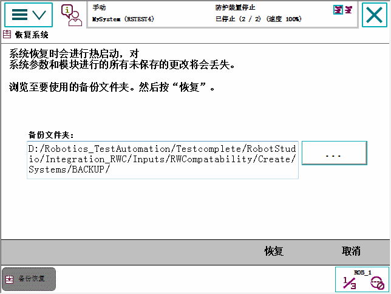
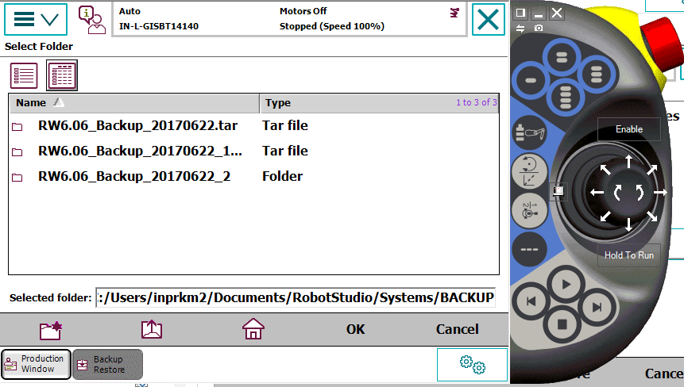
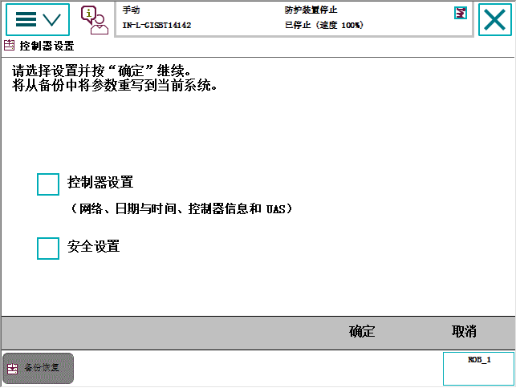
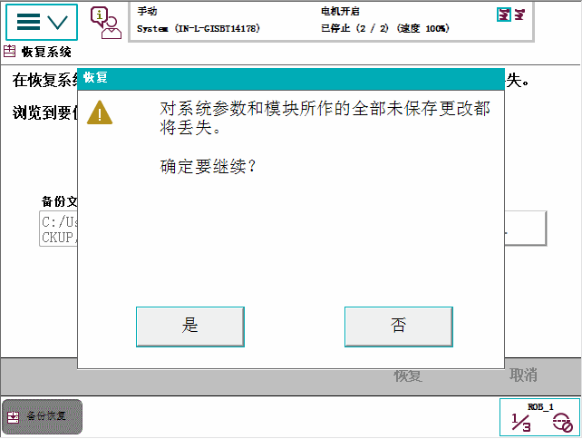

我们建议在以下时间执行还原：
如果您怀疑程序文件已损坏.
如果对指令和/或参数设置所作的任何更改并不理想，且打算恢复为先前的设置。
在恢复过程中，所有系统参数都会被取代，同时还会加载备份目录中的所有模块。
Home 目录将在重启过程中复制到新系统的 HOME 目录。
本节介绍如何恢复系统.
操作 | |||
1 | 在ABB菜单中，点击备份与恢复。 | ||
2 | 点击 Restore System（恢复系统）。 显示恢复系统页面。 
| ||
3 | 点击...，选择备份文件夹路径或TAR备份文件格式。 显示选择文件夹窗口。  | ||
4 | 选择备份文件夹或选择TAR格式的备份文件。 | ||
5 | 点击 OK（确定）。 再次显示恢复系统页面，内含已选中的备份文件夹或文件路径详情。 如想用选定备用控制器和安全设置来更换现有控制器和安全设置，则点击高级...，勾选控制器设置和安全设置复选框，点击完成。  | ||
6 | 点击 恢复。 以下屏幕将显示。  | ||
7 | 点击是。 执行恢复后，系统会自动重启。
|